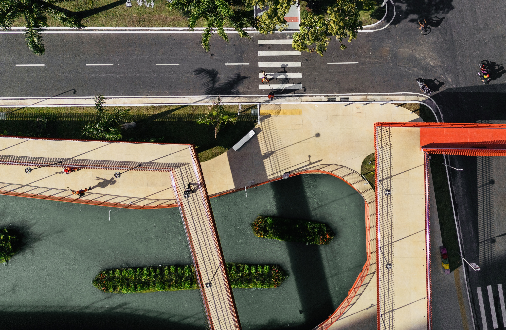

Manhã · CorridaTreino & Café na Doca
O Parque Linear da Doca é uma excelente pedida! Para te ajudar a aproveitar o espaço da melhor forma, separei algumas dicas essenciais:
Estrutura completa: O Parque conta com quadras de esportes, academia ao ar livre e pontos de hidratação.
Ideal para o seu ritmo: É perfeito para caminhadas e corridas leves.
Atenção ao tipo de treino: Como as pistas são um pouco estreitas e dividem espaço com ciclistas e patinadores, não recomendamos treinos de tiro ou intervalados.
Melhores horários: O ideal é ir pela manhã.